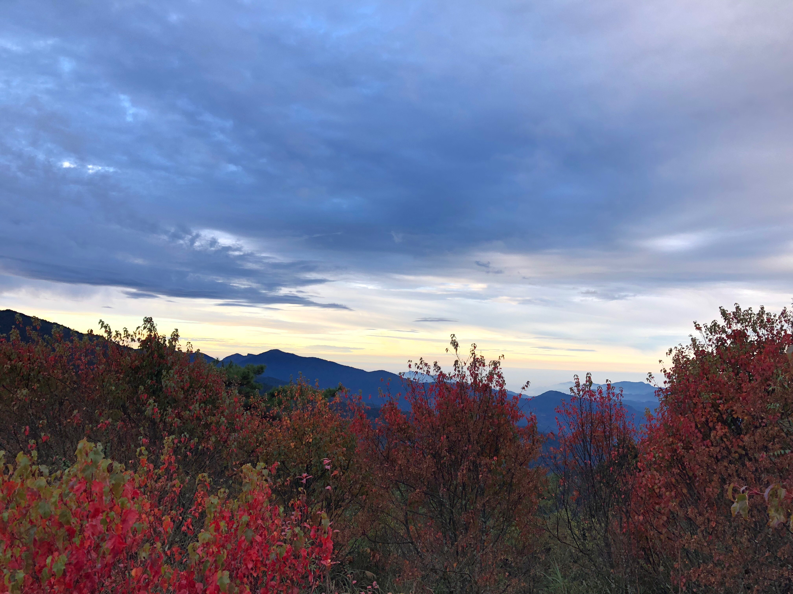
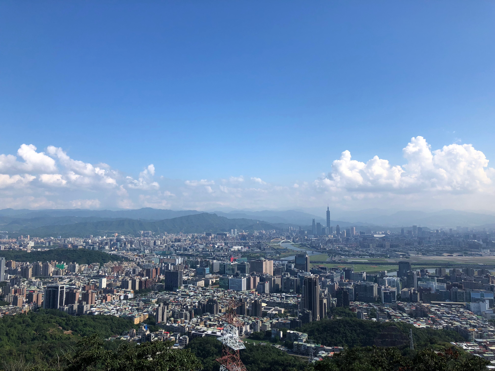

Alishan National Scenic Area (阿里山國家風景區)
December 10, 2018 @yi fan
Alishan is blessed with bountiful natural resources, such as sun rise views, a sea of clouds and old forests.

Jinmian Mountain (金面山親山步道)
August 6, 2017 @yi fan
Jinmian Mountain (金面山) which translates as "Golden Face Mountain" is a short hike in Taipei's Neihu (內湖) district.